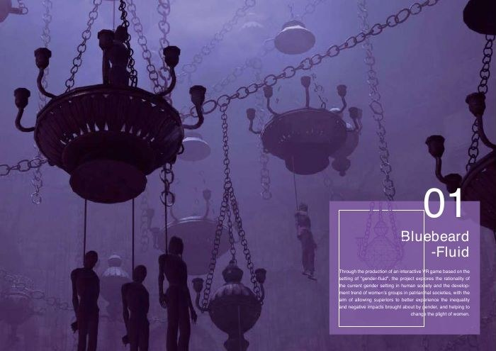
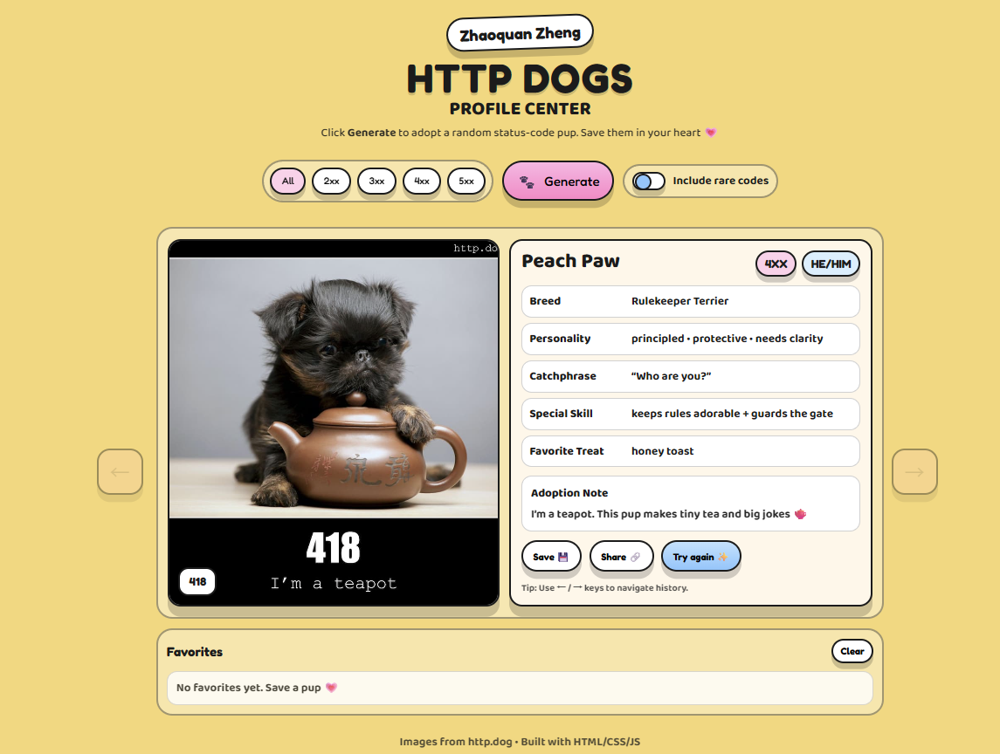
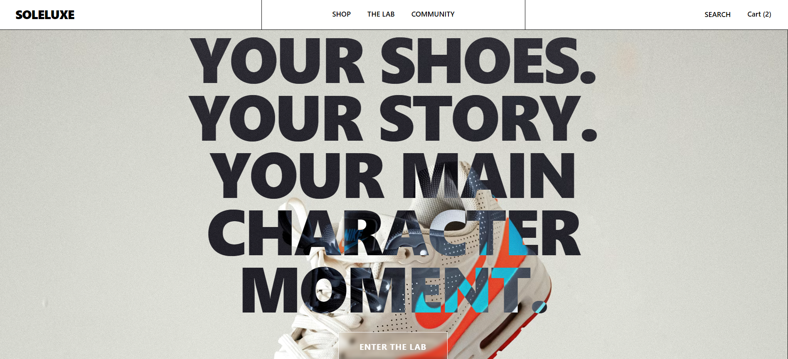
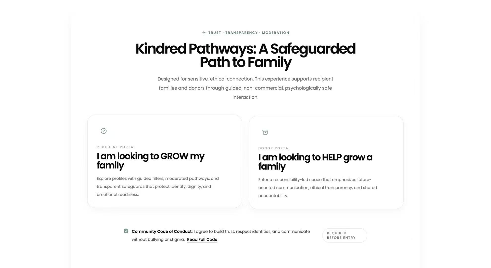
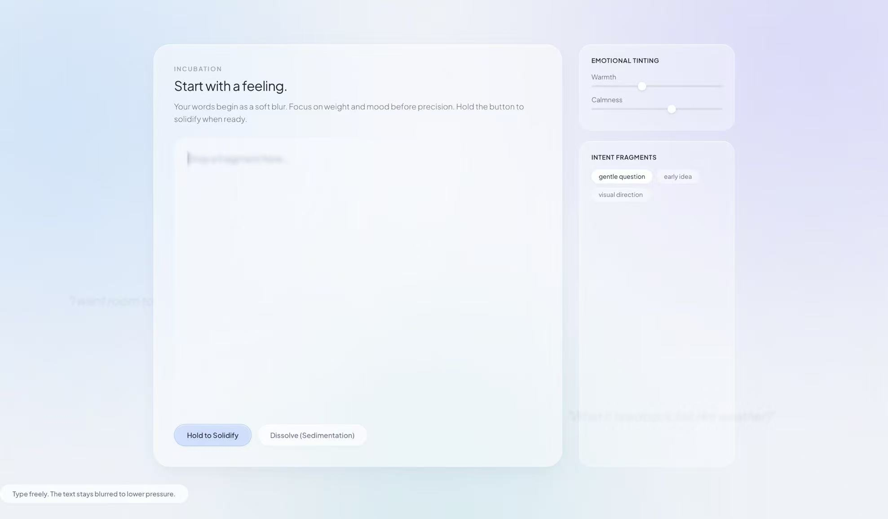
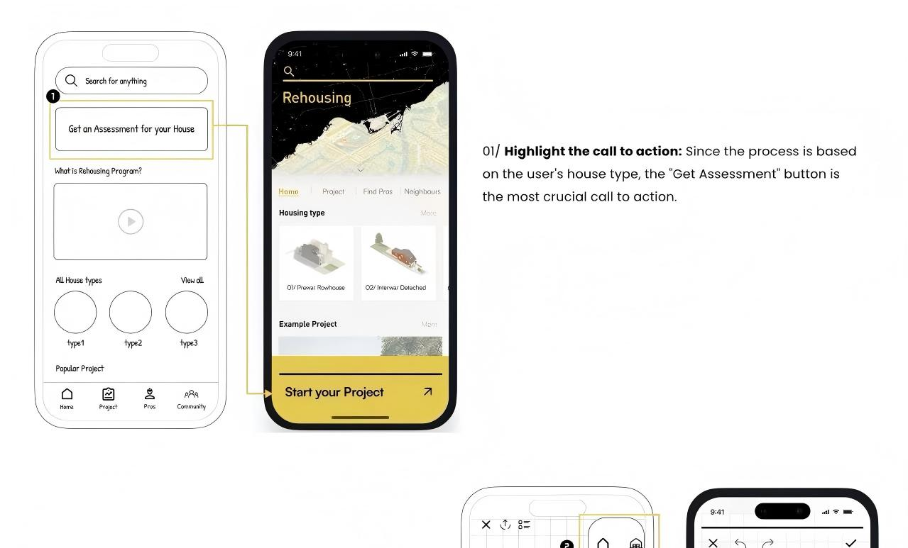

INFORITANCE
A speculative installation using touch, light, and a sequence of sculptural modules to explore how information might be received and passed on.
Read project →Documented installation and film
The wider practice
Physical objects, speculative services, and interfaces built to ask a question.
A supporting collection alongside the four selected projects. Each entry names the artifact you can actually explore.
A speculative installation using touch, light, and a sequence of sculptural modules to explore how information might be received and passed on.
Read project →Documented installation and film

A sculptural wearable inspired by the gut–brain relationship, exploring how internal stress might become visible through an external object and changing light.
Read project →Documented wearable concept

A speculative dining service combining reminiscence, personal storytelling, and experimental food forms to explore dignity and identity in later life.
Read project →Research-led service concept

An immersive narrative project exploring gender, power, and personal boundaries through a fictional virtual world.
Read project →Documented virtual experience

A personality-led cat adoption prototype with preference sliders, a rule-based compatibility score, and short care scenarios. Petfinder data is optional; sample data is used when the integration is unavailable.
Open web prototype ↗Not an AI matching model. The Render service may need time to wake up; compatibility percentages are heuristic scores.

A footwear customization prototype connecting accessory selection, a visual styling lab, and a simulated shopping flow. It demonstrates direct manipulation and an expressive retail interface.
Try customization prototype ↗Prototype commerce, community posts, and reviews are demonstration content.

A concept exploring the information, trust, and emotional considerations around donor selection. Preserved as an early product exploration.
Open concept ↗Concept interface; not a clinical service.

An early social product concept exploring a slower transition from private thinking to public expression.
View source ↗Source archive; not labeled as a verified live prototype.

An early platform concept for guiding people through renovation and extension decisions.
View original project visual ↗A visual record is available; no working interactive prototype was located.